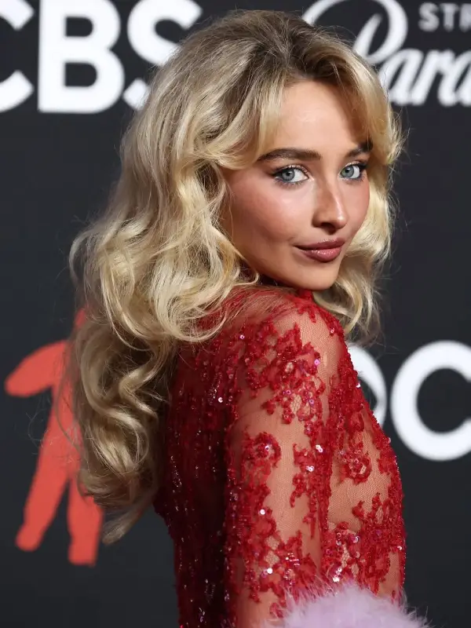
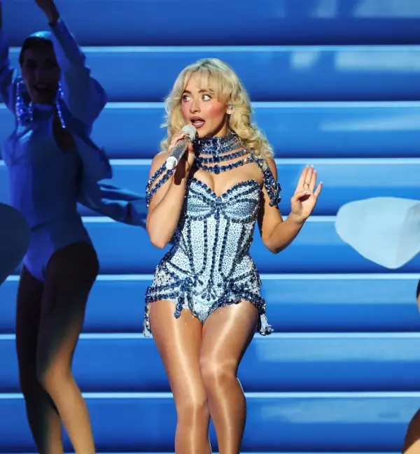
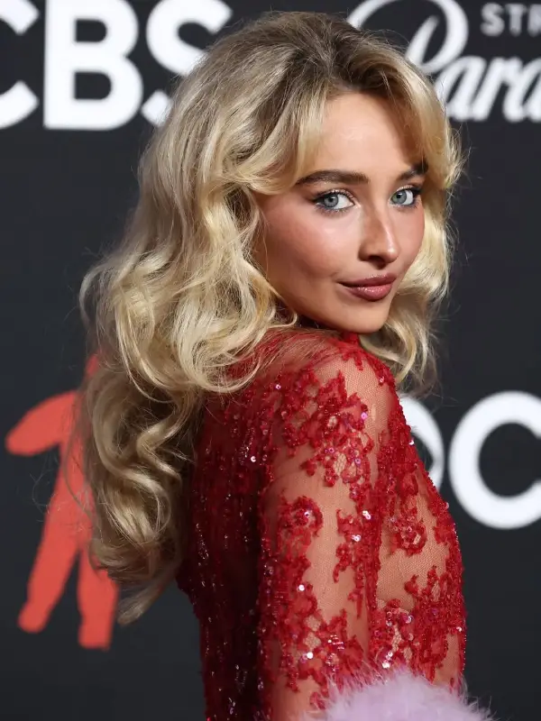
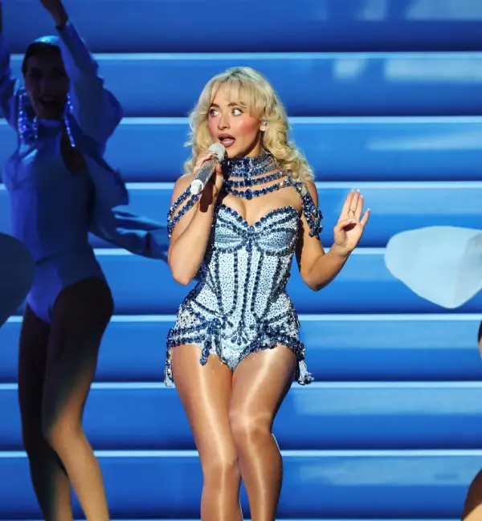

Early Life
Sabrina was first cast as a minor character in Law & Order. Following this role, she was casted in several other series, mainly through either Disney or Nickelodeon. In 2013, she was cast as Maya Hart, the leading role in Girl Meets World, jumpstarting her career in both acting and singing, as she sang the theme song to the show. Only a year later, she released her first EP, followed by the release of her debut album only a year later.
Sabrina's Pop Career
Sabrina continued to release albums, shifting her focus from acting to singing. She announced her first tour in 2016 for her album Evolution. She continued her live performances after the Evolution tour ended, opening for Ariana Grande in 2017, then going on her second headlining tour later that year. Recently, she’s opened for Taylor Swift’s Eras Tour and has completed several legs of her Short n Sweet tour, resuming later this year.
Discography
- 1. Eyes Wide Open (2015)
2. Evolution (2016)
3. Singular: Act I (2018)
4. Singular: Act II (2019)
5. Emails I Can’t Send (2022)
6. Short n’ Sweet (2024)
7. Man’s Best Friend (2025)
Concert Tours
● The De-Tour ● The Singular Tour ● The Evolution Tour ● Emails I Can’t Send Tour ● Short n’ Sweet Tour
Gallery
 


